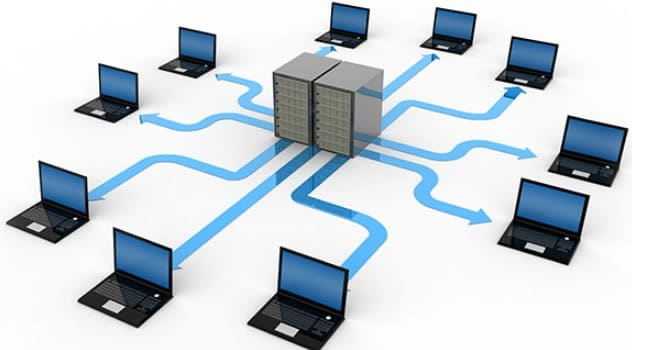

Concepto de sistemas de información
Que es?...
Como se usan?...

¿Que es?
Un sistema de información (SI) es un conjunto de componentes interrelacionados que trabajan juntos para recopilar, procesar, almacenar y difundir información para apoyar la toma de decisiones. También apoyan la coordinación, control, análisis y visualización de la organización.
Por otro lado, la tecnología de TI describe cualquier tecnología que proporciona o respalda los flujos de almacenamiento, procesamiento y comunicación dentro de una organización. Todo lo relacionado con las computadoras: software, redes, intranets, sitios web, servidores, bases de datos y telecomunicaciones pertenecen al paradigma de TI.
¿Como se usan?
La mayoría de las empresas modernas dependen en gran medida de los sistemas para administrar sus operaciones y tomar decisiones. Desde el correo electrónico hasta la gestión de bases de datos y sitios web. Aunque los sistemas de información pueden usarse de manera diferente dentro de una organización, todos tienen los siguientes componentes:
Hardware: los sistemas utilizan hardware local como una computadora o servicios de Nube para su ejecución.
Software: estos son los programas utilizados para administración, procesamiento y análisis.
Bases de datos: los sistemas trabajan con recursos organizados en tablas y archivos.
Red: se deben conectar diferentes recursos entre sí, especialmente si muchas personas diferentes en una organización usan el mismo sistema.
Procedimientos: describen cómo se procesan y analizan los datos y recursos específicos para obtener las respuestas para las que está diseñado el sistema (“lógica del negocio”).
Cada sistema de información está compuesto por una serie de recursos interrelacionados que interactúan y se ordenan de la manera más conveniente de acuerdo con el propósito de información planteado, como la recopilación de información personal, el procesamiento de datos estadísticos, la organización de documentos, etc. Estos recursos pueden ser:
Recursos humanos. Personal de variada índole y destrezas.
Datos. Cualquier tipo de información masiva que precisa de organizarse.
Actividades. Procedimientos, pasos a seguir, estaciones de trabajo, etc.
Recursos informáticos. Aquellos determinados por la tecnología.
Tipos de sistemas de información
Desde un punto de vista empresarial u organizativo, los sistemas de información pueden clasificarse en:
Sistemas de Procesamiento de Transacciones (TPS). También conocidos como sistemas de gestión operativa, recopilan la información pertinente a las transacciones de la organización, es decir, de su funcionamiento.
Sistemas de Información Ejecutiva (EIS). Monitoriza las variables gerenciales de un área específica de la organización, a partir de la información interna y externa de la misma.
Sistemas de Información Gerencial (MIS). Contemplan la información general de la organización y la comprenden como un todo.
Sistemas de soporte de decisiones (DSS). Orientados al procesamiento de información intra y extra organizacional, para el apoyo en la conducción de la empresa.